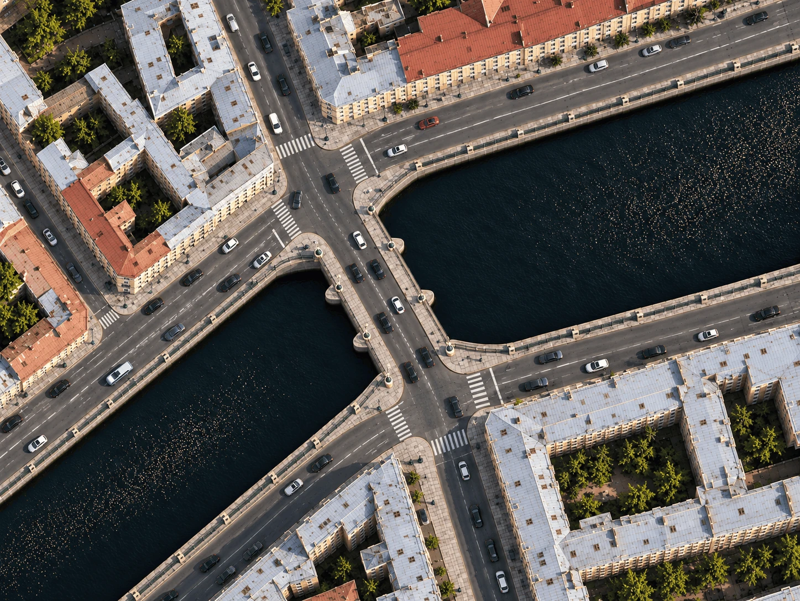
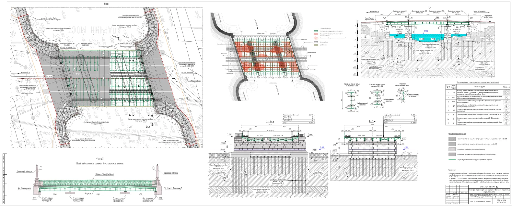
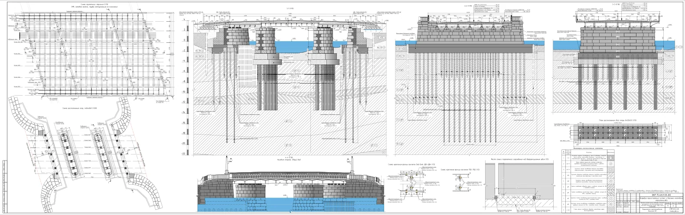
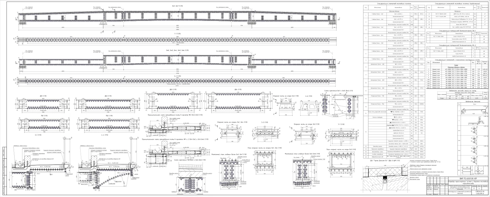
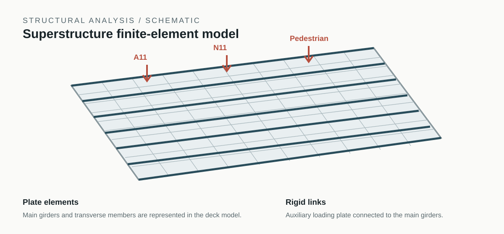
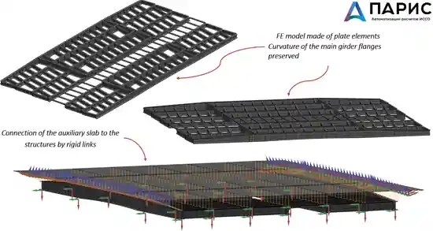
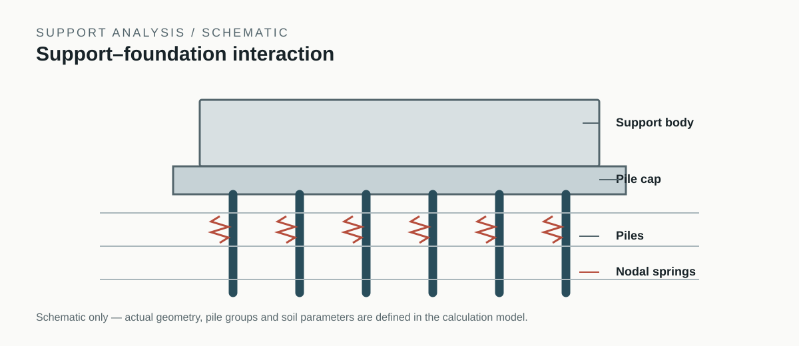
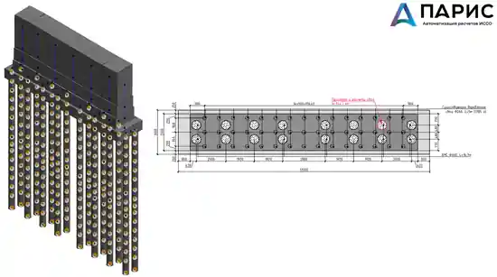

Preparatory works
Construction of a temporary utility bridge, relocation of utility networks and installation of service walkways.
ACADEMIC PROJECT · 2026 · SAINT PETERSBURG
Capital repair project for Alarchin Bridge over the Griboyedov Canal, a federal cultural heritage site.
Online project presentation based on the 44-slide English project deck and the structural calculation report.
PROJECT CONTEXT
The project addresses the capital repair of an existing bridge in the historic centre of Saint Petersburg. The design responds to the technical condition of the structure while retaining the character of a protected urban landmark.
The bridge is located in the Kolomna Municipal District of Saint Petersburg’s Admiralteysky District. It carries two traffic lanes and pedestrian sidewalks on both sides.

Seven continuous riveted main I-girders; built-up cross-beams from 65×65×9 mm angles at 1.0 m spacing; sidewalk cantilevers; trough plates and a reinforced-concrete slab.
Massive supports assembled from granite blocks with rubble-masonry infill. The existing foundation includes timber piles, Ø260 mm, arranged in three rows.
Gravity-type rubble-masonry structures faced with granite blocks and integrated into the canal embankment wall. The existing foundation also includes timber piles, Ø260 mm.
TECHNICAL SURVEY
The technical survey identified deterioration affecting both the steel superstructure and the masonry supports.
The report concludes that the required interventions exceed routine maintenance and that capital repair is necessary.
REHABILITATION DESIGN
Two design options were assessed. Option No. 1 was selected for further development.



STRUCTURAL ANALYSIS
The structural analysis was carried out in PARIS using the finite-element method. The model combines plate elements for the superstructure with bar elements for support bodies, pile caps and piles.



| Load case | Modelled action | Application in the checks |
|---|---|---|
| A11 | Two-axle trolley with 110 kN axle load and a distributed component of 11 kN/m. | Strength, fatigue and deflection combinations. |
| N11 | Four-axle heavy trolley with 196 kN axle load. | Strength and deflection combinations; excluded from fatigue checks as stated in the report. |
| Pedestrian | 3.0 kN/m, considered together with A11. | Combined loading of the carriageway and sidewalks. |
| Verification | Critical result | Limit | Utilisation | Critical location / combination |
|---|---|---|---|---|
| Normal stress σx | 212.89 MPa | 295.00 MPa | 72.2% | Bm4, midspan of the 11.15 m span; permanent + A11 + pedestrian load. |
| Shear stress τxy | 149.39 MPa | 171.76 MPa | 87.0% | Bm4, support section at Op2; permanent + A11 + pedestrian load. |
| Deflection | 17.0 mm | 27.9 mm | 60.9% | Bm4, midspan of the 11.15 m span under N11. |
Stress values are converted from kN/m² to MPa. Utilisation ratios are calculated from the corresponding reported result and limit. Fatigue checks for normal and shear stresses are also included in the source report.
SUPPORTS AND FOUNDATIONS
Representative models were developed for the intermediate support Op2 and the abutment Ok1. Separate pile–soil spring stiffnesses were assigned to the two support types because the ground conditions differ.
The support model uses bar finite elements joined by rigid links. The embedded piles interact with the soil through nodal springs; pile resistance is checked using the soil parameters and the procedure described in the report.


| Support | Axial force N | Pile capacity Fd | Utilisation | Calculated settlement |
|---|---|---|---|---|
| Intermediate support Op2 | 744.1 kN | 764.8 kN | 0.973 | 3.99 mm |
| Abutment Ok1 | 216.5 kN | 275.5 kN | 0.786 | 6.13 mm |
The user-referenced extract ends at printed page 95, where the abutment calculation begins. Printed pages 96–98 are included here to show the completed abutment check and differential-settlement verification. The report states that the 2‰ limit for the longitudinal profile is satisfied.
CONSTRUCTION METHODOLOGY
Construction of a temporary utility bridge, relocation of utility networks and installation of service walkways.
Removal of surfacing and slab concrete, installation of temporary supports and dismantling of the existing superstructure.
Installation and dewatering of sheet-pile cofferdams; dismantling of masonry and pile caps; excavation; construction of bored piles and pile caps; restoration of granite masonry.
Installation of cofferdams, partial dismantling of masonry, drilling into the pile cap, installation of TITAN drilled-injection piles and restoration of the granite facing.
Assembly and placement of superstructure blocks, installation of trough plates and reinforcement, concreting of the deck slab, approach slabs, parapets and drainage elements.
Via Malo-Kalinkin Bridge
Via Mogilevsky Bridge
RESEARCH APPLICATION
The bridge also served as a case study for adapting an algorithm for assessing the efficiency and effectiveness of facility lifecycle management systems to bridge structures.
The algorithm was tested using the Alarchin Bridge project and technical survey data. The reported low assessment level is consistent with the survey conclusion that the structure was in a pre-emergency, inoperable condition.
PROJECT MATERIALS
A concise reference to the critical finite-element checks and pile foundation results is available below. The detailed source extracts are retained separately.
Structural analysis summaryPDF · selected results from report pages 54–98Open PDF ↗The online presentation and drawing previews are based on the project materials. The original 44-slide PowerPoint and full calculation extracts are not reproduced in this summary PDF.